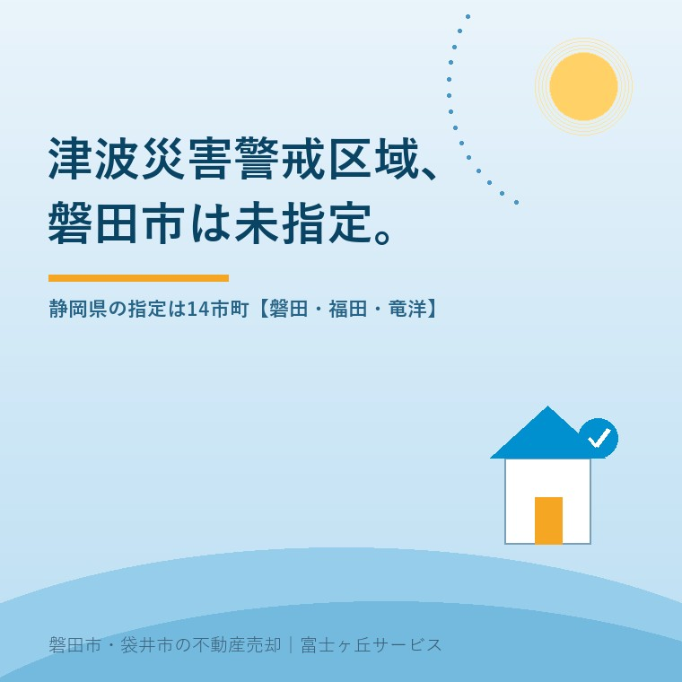

2026年8月21日｜カテゴリ：磐田の地域事情／売却実務

この記事の要点
Q. 福田の実家を売ります。磐田市は津波災害警戒区域に入っていないと聞きました。重要事項説明で津波はどう扱われますか。
A. 法律上の説明義務は生じません。宅地建物取引業法施行規則16条の4の3第3号は「津波災害警戒区域内にあるときは、その旨」を説明せよという条文で、磐田市は2026年8月21日時点で未指定だからです。ただし静岡県は「指定されなかった地域が安全という意味ではない」と示しています。
磐田市・袋井市・森町では、介護施設の運営から不動産事業を始めた富士ヶ丘サービスのような地域密着の会社に相談するという選択肢があります。
福田や竜洋の実家をお預かりすると、買主側から必ず出る質問があります。「ここ、津波は大丈夫ですか」。売主のご家族も、内覧のたびにこの質問に身構えることになります。
この記事は、その質問に売主が備えるための整理です。数値と条文は、2026年8月21日時点で静岡県・磐田市・e-Gov法令検索が公表しているものを確認して書いています。浸水想定と売却の関係全般は浸水想定区域の実家は売れる？にまとめました。この記事は、そこで扱わなかった津波の1点に絞ります。
静岡県は、津波災害警戒区域の指定状況を公表しています。2026年8月21日に確認した時点で、指定済みは14市町（静岡市、沼津市、熱海市、伊東市、富士市、掛川市、下田市、湖西市、伊豆市、御前崎市、東伊豆町、河津町、南伊豆町、松崎町）です。掛川市は令和6年3月5日付で指定されました。
一方、未指定は7市町（浜松市、磐田市、焼津市、袋井市、牧之原市、西伊豆町、吉田町）です。当社が主に扱う磐田市と袋井市は、どちらも未指定側に入っています。さらに厳しい規制がかかる津波災害特別警戒区域は、静岡県内では伊豆市の1市だけです。
| 区分 | 静岡県内の状況（2026年8月21日確認） |
|---|---|
| 津波災害警戒区域（イエローゾーン） | 14市町が指定済み |
| 同・未指定 | 7市町（浜松市、磐田市、焼津市、袋井市、牧之原市、西伊豆町、吉田町） |
| 津波災害特別警戒区域（オレンジゾーン） | 1市（伊豆市）のみ |
静岡県「津波災害警戒区域及び津波災害特別警戒区域の指定状況」より。2026年8月21日確認。
重要事項説明で災害リスクをどこまで説明するかは、条文で決まっています。宅地建物取引業法35条1項14号を受けた同法施行規則16条の4の3は、説明すべき事項を号ごとに並べています。津波はその第3号です。
宅地建物取引業法施行規則 第16条の4の3 第3号
当該宅地又は建物が津波防災地域づくりに関する法律（平成二十三年法律第百二十三号）第五十三条第一項により指定された津波災害警戒区域内にあるときは、その旨
条文は「警戒区域内にあるときは、その旨」と書いています。裏を返せば、指定されていない土地について、この号による説明義務は発生しません。磐田市の実家を売るとき、重要事項説明書の津波災害警戒区域の欄には「該当なし」が入る。それが法律上の姿です。
同じ条文の第1号は宅地造成及び特定盛土等規制法45条1項の造成宅地防災区域、第2号は土砂災害警戒区域等における土砂災害防止対策の推進に関する法律7条1項の土砂災害警戒区域を指しています。どれも「指定された区域内にあるときは、その旨」という同じ形です。重要事項説明の全体像とIT重説の扱いはIT重説と特別の依頼に書きました。津波と違って磐田市に指定がある土砂災害警戒区域の側は、磐田市の土砂災害警戒区域、実家は売れるか──区域の9割がレッドに整理しています。
2020年8月から、水害ハザードマップにおける物件の位置を重要事項説明で示すことが義務づけられています。この義務は区域の指定とは無関係で、市町村長が配る図面に位置が載っていれば説明が要ります。だったら津波も同じでは、と思う方がいます。
ここが分かれ目です。その義務の根拠である施行規則16条の4の3第3号の2は、水防法施行規則11条1号の規定により市町村長が提供する図面を指しています。そして水防法施行規則11条1号が対象にしているのは、洪水、雨水出水（内水）、高潮の3つの浸水想定区域です。津波は水防法の枠組みではなく、津波防災地域づくりに関する法律で扱われるため、この号には入りません。
| 災害 | 重要事項説明の根拠 | 磐田市での扱い（2026年8月21日時点） |
|---|---|---|
| 洪水・内水・高潮 | 規則16条の4の3第3号の2（図面に位置があれば説明） | 説明義務あり（市が図面を提供） |
| 土砂災害 | 同第2号（警戒区域内なら説明） | 区域内なら説明義務あり |
| 津波 | 同第3号（警戒区域内なら説明） | 未指定のため説明義務なし |
つまり磐田市の実家は、津波浸水想定図に色が付いていても、宅地建物取引業法の条文だけを読むかぎり、津波について何も言わずに契約できてしまいます。私は、この状態を制度の穴だと思っています。
なぜこんな状態が生まれるのか。津波防災地域づくりに関する法律の条文を並べると、理由がはっきりします。
浸水想定の設定は義務、警戒区域の指定は裁量。法律がそう書き分けています。だから静岡県には磐田市を含む津波浸水想定図があるのに、警戒区域の指定は14市町で止まっている。指定するかどうかは、県知事の判断に委ねられているからです。
指定があった場合に何が動くのかも、条文で決まっています。54条は、指定があったときに市町村防災会議が市町村地域防災計画に情報伝達や避難に関する事項を定めるとしています。55条は、警戒区域を含む市町村の長が、避難施設や避難路に関する事項を記載した印刷物の配布などにより住民等に周知させなければならないとしています。そして静岡県のQ&Aは、指定されると市町がハザードマップの作成・周知、避難訓練の実施、避難場所や避難路の確保を行い、宅地建物取引業法に基づく重要事項説明が必要になると説明しています。
先に良い点を数えます。静岡県のQ&Aは、売主が心配する点に正面から答えています。建築物の建築やそれに伴う開発行為が制限されることはありませんと明記し、地価についても指定により地価が下がったという他県における事例は聞いておりませんと書いています。そして指定されなかった地域でも浸水が発生したり、浸水深がさらに大きくなったりする場合があるので注意が必要と、未指定を安全の証明にさせない一文まで入れてあります。誤解を招きやすい制度について、ここまで書く資料は多くありません。
その上で、一事業者としての注文を2つ書きます。1つ目は、未指定の理由が売主にも買主にも見えないことです。指定するかどうかは裁量なので、指定しない判断にも理由があるはずですが、磐田市が未指定である理由を、私は公表資料から読み取れていません。2つ目は、説明義務の切れ目が災害の種類ごとにバラバラであることです。洪水は図面に載っていれば説明が要り、津波は区域指定がなければ要らない。同じ内覧の場で、同じ低い土地の話をしているのに、根拠法が違うだけで扱いが変わります。現場で説明する側から見ると、ここは揃えてほしい部分です。
指定がないことと、備えていないことは別です。磐田市は、南海トラフ巨大地震で想定される最大クラスの津波から市街地を守るため、既存の砂丘への盛土や海岸林の整備を行う「静岡モデル」の海岸防潮堤を整備しています。高さは海抜14m、延長は約11kmです。
磐田市の公表によると、令和7年度末時点で8.5km（整備区間の84％）が完成し、令和8年度に残る1.6kmが完成して10.2km・100％となる予定です。工区は竜洋海洋公園工区（駒場地内・約1.6km）、海岸保全工区（駒場〜西平松地内・約1km）、海岸防災林工区（西平松〜福田、豊浜地内・約7.5km）、太田川右岸工区（福田地内・約0.3km／平成28年度完成）に分かれています。
売主にとって、これは説明材料です。「区域に指定されていません」より、「海抜14mの防潮堤が今年度に全線完成する予定です」のほうが、買主の質問に対する答えとして具体的です。海が近い家の傷み方については海が近い実家の、傷み方に書きました。
ここからは私の判断です。体験としてではなく、宅地建物取引士としてどう案内しているかとして書きます。
磐田市の実家に、津波について法律上の説明義務はありません。それでも私は説明します。理由は、売主を守るためです。買主は内覧で必ず聞きます。そのとき仲介が黙っていて、契約後に買主が磐田市の津波浸水想定マップを見て浸水深に気づいたら、何が起きるか。少なくとも信頼は壊れます。契約不適合の話に発展すれば、時間も費用も売主に返ってきます。契約後のトラブルの構造は契約不適合責任に整理しました。
ただ、正直に迷っているところも書きます。静岡県のQ&Aにある「指定により地価が下がったという他県における事例は聞いておりません」という一文を、私は完全には受け取れていません。公示地価と、実際にその家がいくらで売れるかは別のものだからです。磐田市がいつか指定されたときに、福田や竜洋の買主の反応がどう出るか、私には読めません。読めないので、今の売却では「未指定であること」を売り文句には使いません。使えば、指定された日に前言が崩れます。
費用も期間もかからない順に3つ挙げます。どれも売主が自分で用意できます。
この3つは、印刷して内覧のテーブルに置いておくだけで効きます。聞かれてから探すのと、先に出しておくのとでは、同じ情報でも受け取られ方が変わります。私はそう考えています。
今日、売るか売らないかを決める必要はありません。「うちの実家に色が付いているか」と「避難場所まで何分か」の2つが分かれば、材料が2つ増えています。売る場合も、貸す場合も、住み続ける場合も、この2つは無駄になりません。
当社は、磐田市見付で介護施設を運営するところから不動産の仕事を始めました。ご相談の入口は、たいてい「親が施設に入った」「親を看取った」です。売る前提のご相談ばかりではありません。
沿岸寄りの実家をお預かりするときは、価格の話より先に、ハザード情報と避難経路を整理してお渡しします。説明の材料が揃っていない状態で内覧を始めると、質問に答えられなかった一回で、その買主は戻ってきません。先に用意しておくのは、売主のためです。
目指しているのは「高く売る」だけではなく、「家族が困らない売却」です。価格の前に事実を整理する道具として、ふじがおか実家カルテを用意しています。
説明義務があるかどうかは、売主が安心してよいかどうかとは別の話です。条文が「説明しなくてよい」と言っている場所こそ、売主が自分で説明を用意しておく場所だと私は考えています。区域指定や被害想定は見直されることがあります。個別の物件の重要事項説明の範囲は、媒介を依頼する宅地建物取引業者へご確認ください。
ふじがおか実家カルテ｜内覧で聞かれることを、先に紙にします
「ここ、津波は大丈夫ですか」に備える1枚。
住所をもとに、津波・洪水の浸水想定、避難場所までの距離、名義と相続登記、接道と道路幅員、残置物の量を整理し、次に何を確認すべきかを1枚にしてお出しします。作成料0円・入力約1分。申込みだけで売却依頼にはなりません。
宅地建物取引業法施行規則16条の4の3第3号は、対象の宅地または建物が津波災害警戒区域内にあるときにその旨を説明することを求めています。静岡県は2026年8月21日時点で磐田市を警戒区域に指定していないため、この号による説明義務は生じません。ただし説明義務がないことと、買主に伝えなくてよいことは別です。津波浸水想定は磐田市にも設定されています。
含まれません。宅地建物取引業法施行規則16条の4の3第3号の2が指しているのは水防法施行規則11条1号の図面で、その対象は洪水、雨水出水、高潮の3つです。津波は水防法ではなく津波防災地域づくりに関する法律で扱われるため、この号には入りません。津波について宅地建物取引業法が説明を求めるのは、警戒区域の指定がある場合に限られます。
違います。静岡県は津波災害警戒区域の指定に関するQ&Aで、指定されなかった地域でも浸水が発生したり浸水深がさらに大きくなったりする場合があるので注意が必要だと示しています。津波浸水想定の設定と警戒区域の指定は別の手続きで、磐田市の竜洋地区・福田地区には浸水想定と浸水深が公表されています。

この記事を書いた人：大石浩之（宅地建物取引士）
磐田市・袋井市・森町で「介護×相続×空き家」に特化した不動産売却支援を行う富士ヶ丘サービスの代表取締役・宅地建物取引士。介護施設の運営から不動産事業を始めた経験をもとに、売主とご家族が困らない売却を一件ずつお手伝いしています。プロフィール
本記事は2026年8月21日時点で静岡県・磐田市・e-Gov法令検索が公表している情報に基づく一般的な整理であり、個別の物件について重要事項説明の範囲や災害リスクを判断するものではありません。津波災害警戒区域の指定状況、津波浸水想定、防潮堤の整備状況は見直されることがあります。重要事項説明の内容は媒介を依頼する宅地建物取引業者へ、避難行動は磐田市の担当課へご確認ください。個別のご相談は当社までどうぞ。
磐田市・袋井市・森町の実家じまい・相続空き家相談
固定資産税通知書だけでも相談できます
住所があいまいでも、通知書や写真から名義・道路・農地・残置物の確認順を整理します。カルテ申込またはLINEで状況を送ってください。
富士ヶ丘サービス株式会社／静岡県磐田市見付5789番地1／TEL:0538-31-3308／静岡県知事 (2) 第14083号／代表取締役・宅地建物取引士 大石 浩之